Axial vs. Appendicular Skeleton
| Division | Bone Count | Includes | Key Idea |
|---|---|---|---|
| Appendicular | Upper/lower limbs, hands/feet, shoulder + pelvic girdles | Movement-related skeleton | |
| Axial | Skull, ossicles, hyoid, ribs, sternum, vertebrae, sacrum | Central axis / protection |
The human body has bones, not including the teeth.
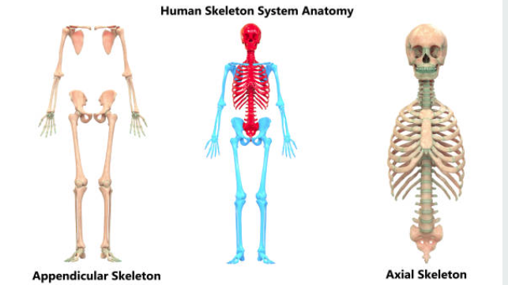
The skeleton is divided into 2 major groups:
Appendicular Skeleton = bones
Includes:
• Upper
• Hands
• Lower
• Feet
• girdle
• girdle
Axial Skeleton = bones
Includes:
•
• Auditory ossicles
•
• Ribs
•
• Vertebrae
•
Bones of the Upper Limb 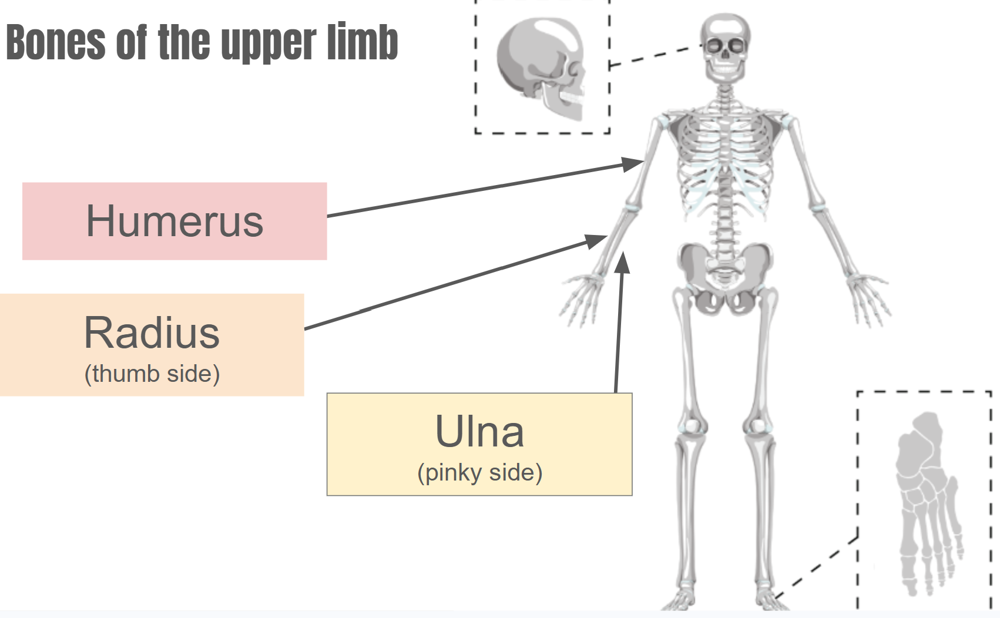
Humerus =
Radius = located on the side of the forearm.
Ulna = located on the side of the forearm.
Bones of the Lower Limb
Femur =
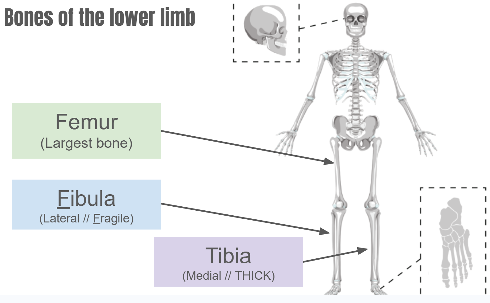
Fibula = and relatively fragile.
Tibia = and much thicker.
Bones of the Foot
Tarsals
• collection of bones.
Metatarsals
• First row of bones.
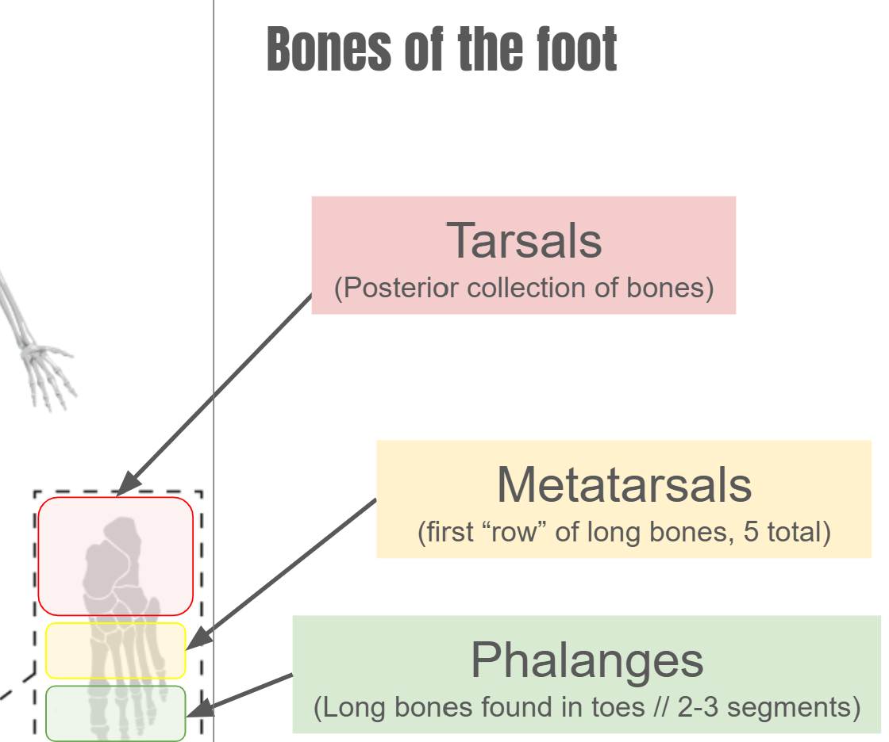
• total.
Phalanges
• Long bones found in the .
• Usually arranged in – segments.
Sternum and Clavicle
Sternum
• Also called the bone.
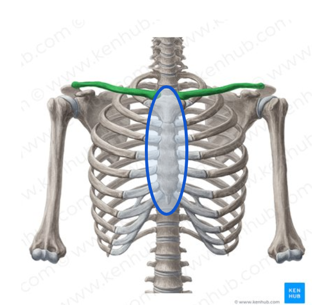
• Protects the .
Clavicle
• Also called the .
Vertebral Column and Scapula
| Region | Number | Location |
|---|---|---|
| Cervical | Neck | |
| Thoracic | Chest / rib region | |
| Lumbar | Lower back | |
| Sacral | fused | Sacrum |
| Coccyx | Tailbone |
The vertebral column contains vertebrae organized into regions.
Scapula =
Bones of the Hand
Carpals
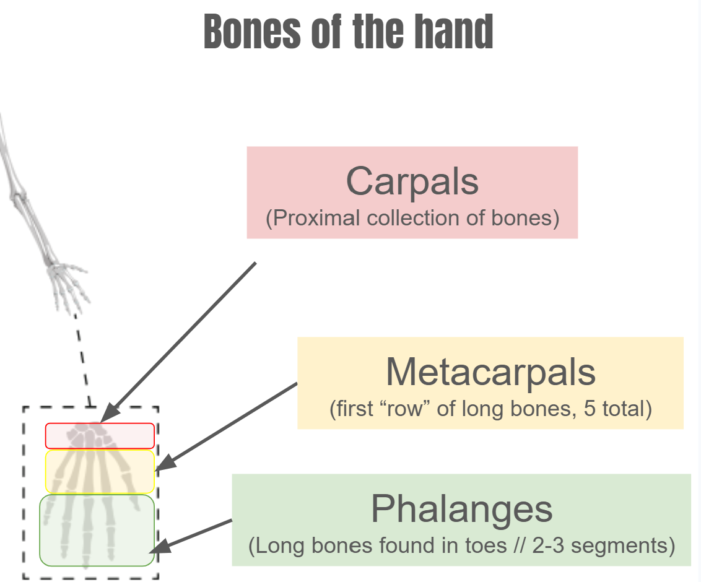
• collection of bones.
Metacarpals
• First row of bones.
• total.
Phalanges
• Long bones found in the .
• Usually arranged in – segments.
Bone Markings
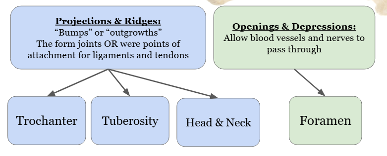
| Bone Marking | Type | Definition / Description | Example / Function |
|---|---|---|---|
Trochanter 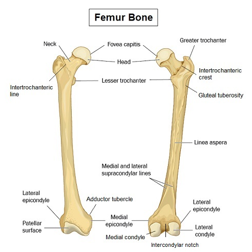 |
Projection / ridge |
|
Greater trochanter on femur; muscle attachment |
Tuberosity 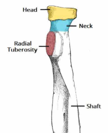 |
Projection / ridge |
|
Radial tuberosity; biceps attachment |
Head & Neck 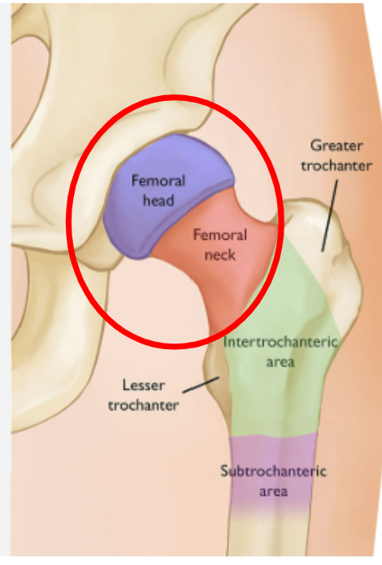 |
Projection / ridge |
|
Femoral head and neck |
Foramen 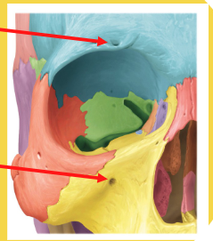 |
Opening / depression |
|
Allows nerves and blood vessels to pass |
A bone marking is a distinctive or surface landmark.
Two major categories:
Projections and Ridges
• “Bumps” or .
• Form joints OR provide attachment points for and tendons.
Openings and Depressions
• Allow vessels and nerves to pass through.
Vertebral Column
The vertebral column is also called the spinal column, , or spine.
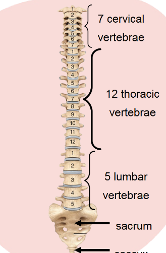
It contains vertebrae divided into regions.
Functions:
• Supports the weight of the and trunk.
• Protects the cord.
• Allows spinal to exit.
• Provides sites for attachment.
• Allows movement of the and trunk.
Curves of the Vertebral Column
The vertebral column develops major curves in the adult.
These curves help accommodate posture.
They help align body weight with the and lower limbs.
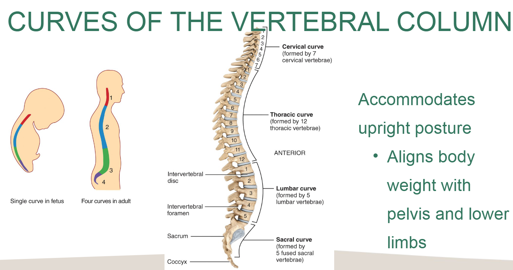
Ribs
| Rib Type | Numbers | Sternal Attachment | Key Note |
|---|---|---|---|
| True | Direct | Attach directly to sternum | |
| False | Indirect or absent | Rib 9 = false, not floating | |
| Floating | No anterior sternal attachment | Only attachment is to |
There are pairs of ribs.
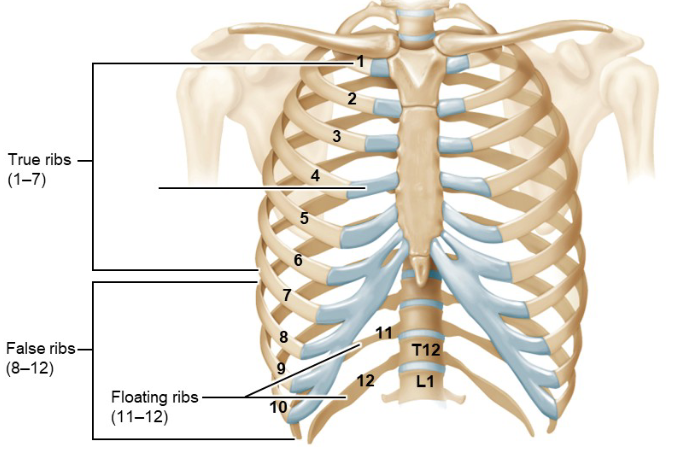
Important examples:
• Rib 9 is but NOT floating.
• Rib 11 is BOTH and floating.
All ribs are either or .
Male vs. Female Pelvis
| Feature | Male Pelvis | Female Pelvis | Why It Matters |
|---|---|---|---|
| Subpubic angle | Less than ° | More than ° | Pelvic outlet size |
| Overall width | Female pelvis accommodates |
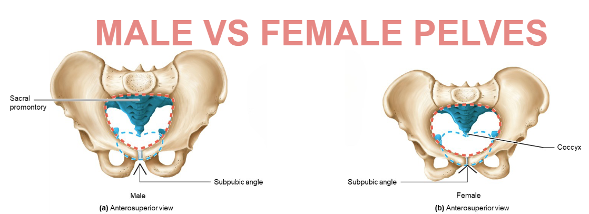
Chapter 7 Review
How many bones are in the human body, and how are they divided between axial and appendicular skeletons?
List the major structures of the appendicular skeleton.
List the major structures of the axial skeleton.
Identify the humerus, radius, and ulna and give one location clue for each.
Identify the femur, tibia, and fibula and give one location clue for each.
Compare the bones of the hand and foot.
Name the five regions of the vertebral column and the number of vertebrae in each.
Define each bone marking:
Trochanter:
Tuberosity:
Head:
Neck:
Foramen:
What are the major functions of the vertebral column?
Explain why vertebral curves are important.
Compare true, false, and floating ribs.
Compare the male and female pelvis.